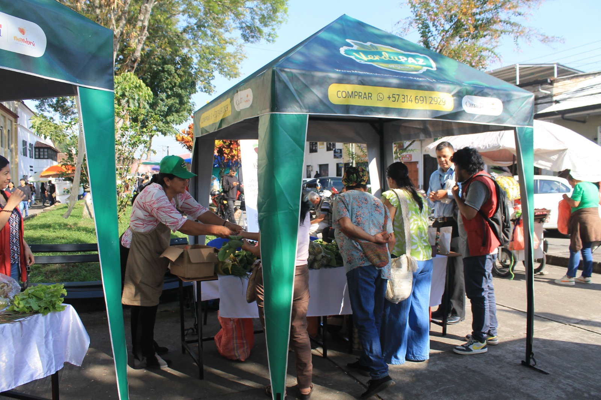
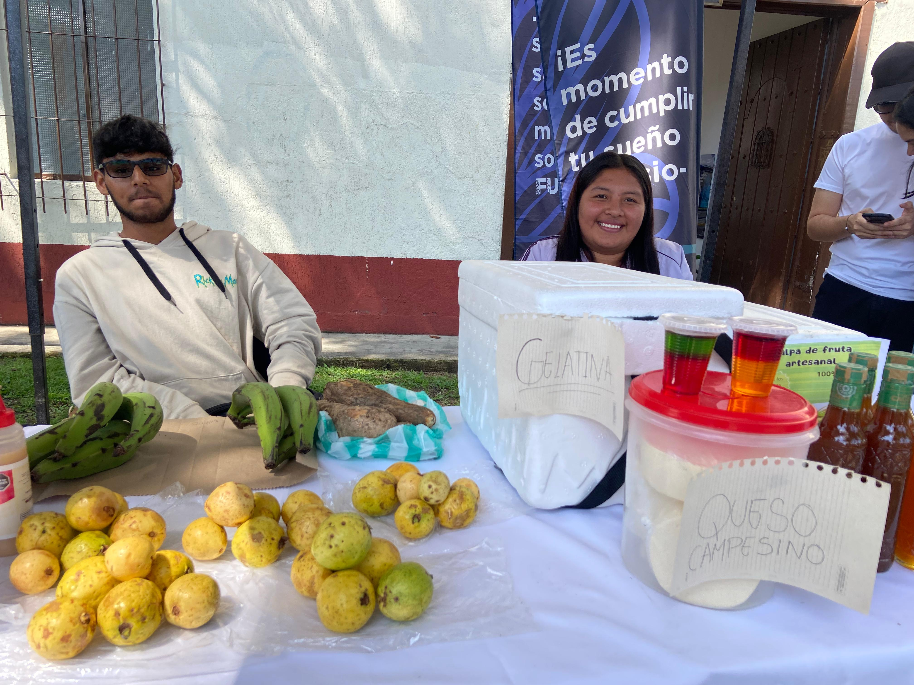
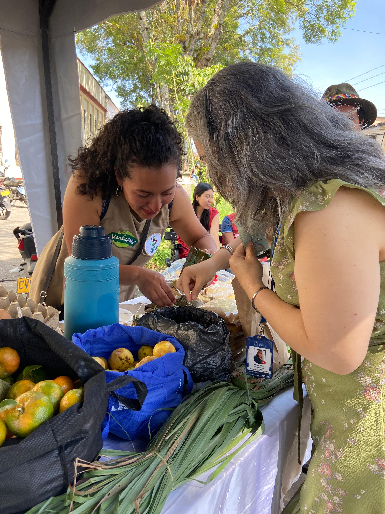
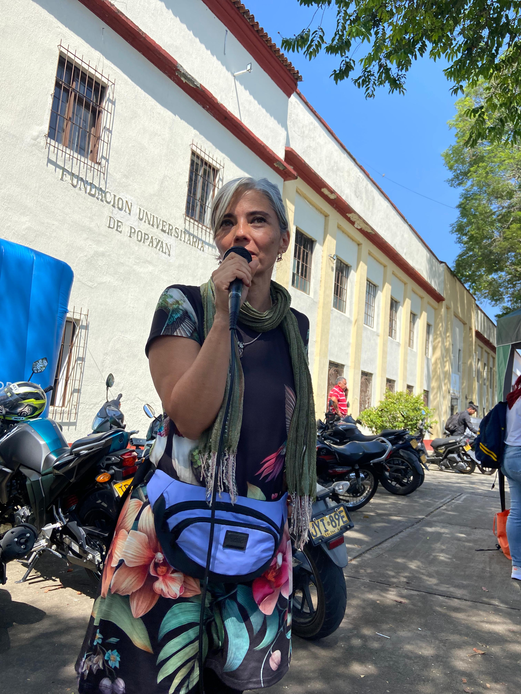
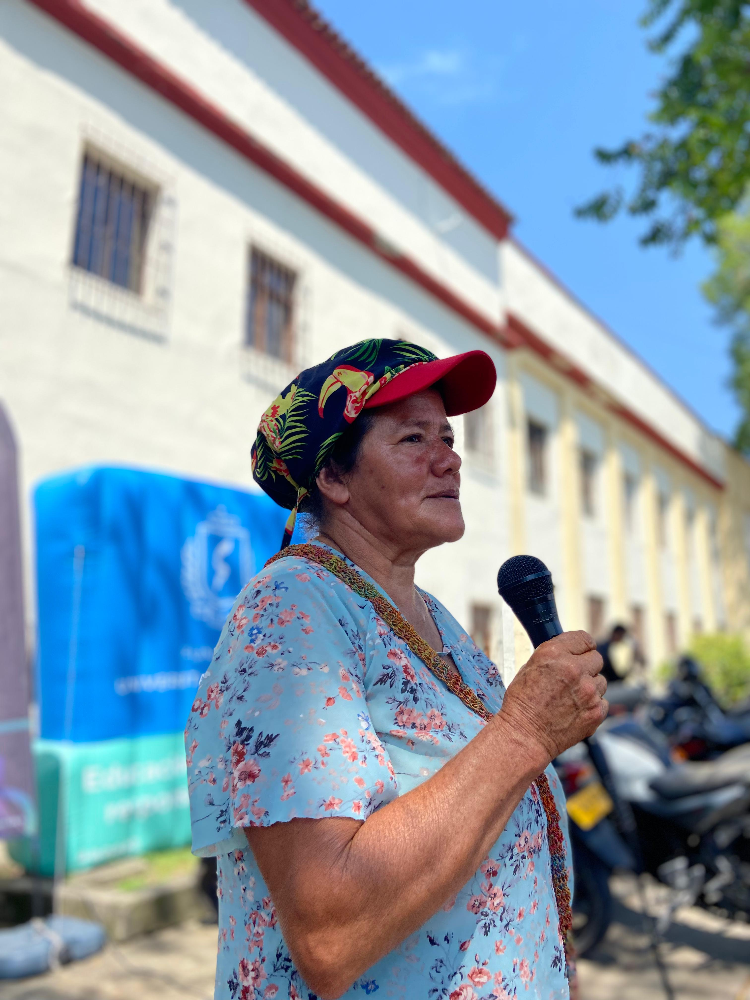
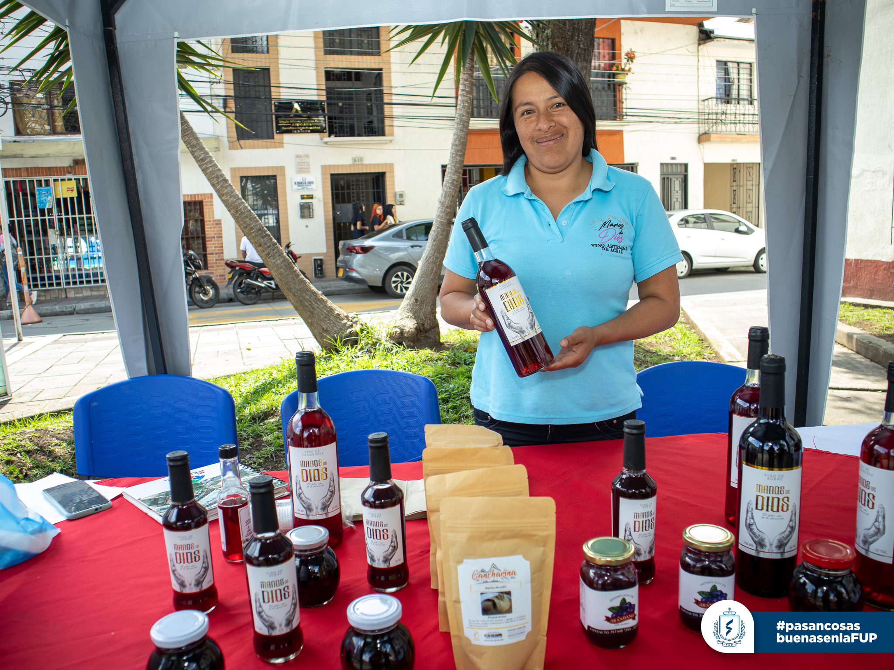
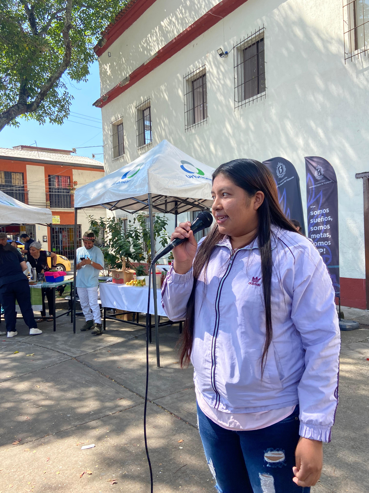

Diversidad
La agroecología propone la diversificación de cultivos y la integración de diferentes especies vegetales y animales para promover la biodiversidad y la salud del suelo

Creación de conocimientos
La agroecología promueve la co-creación de conocimientos entre los agricultores, los investigadores y otros actores relevantes para desarrollar soluciones sostenibles y adaptadas a los contextos locales
Ciclos de nutrientes
La agroecología busca cerrar los ciclos de nutrientes en los sistemas agrícolas, evitando la pérdida de nutrientes y reduciendo la necesidad de insumos externos

Reciclaje de energía
La agroecología busca optimizar el uso de la energía en los sistemas agrícolas, reduciendo la necesidad de combustibles fósiles y otros insumos energéticos
Sinergias
La agroecología busca aprovechar las sinergias entre los diferentes elementos del sistema agrícola para mejorar la eficiencia y la resiliencia

Eficiencia en el uso del agua
La agroecología busca optimizar el uso del agua en los sistemas agrícolas, reduciendo la necesidad de riego y aumentando la resiliencia frente a la sequía

Diseño de sistemas complejos
La agroecología reconoce que los sistemas agrícolas son complejos y dinámicos, y busca diseñar sistemas que sean capaces de adaptarse y evolucionar en respuesta a los cambios del entorno

Resiliencia
La agroecología busca promover la resiliencia de los sistemas agrícolas, es decir, su capacidad para resistir y recuperarse de perturbaciones y cambios del entorno

Participación y empoderamiento
La agroecología busca fomentar la participación y el empoderamiento de los agricultores y las comunidades locales en la toma de decisiones sobre el uso de la tierra y los recursos naturales

Solidaridad
La agroecología busca promover la solidaridad entre los agricultores y las comunidades locales, y entre las diferentes regiones y países